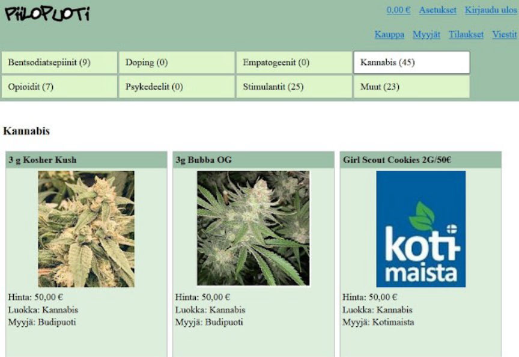
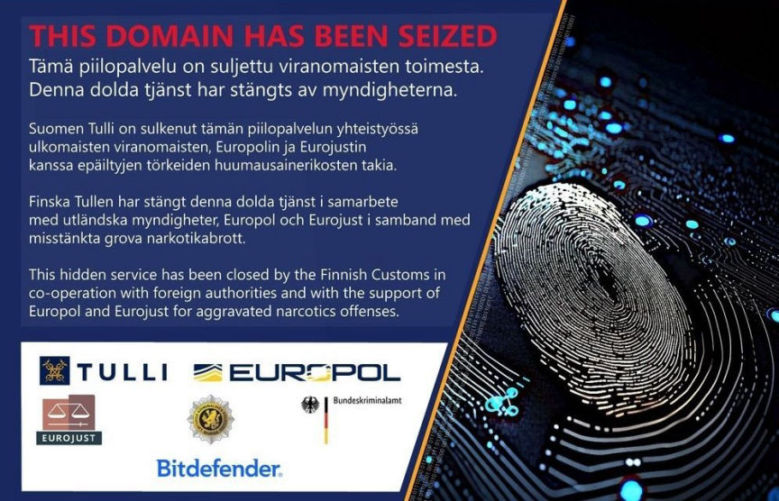
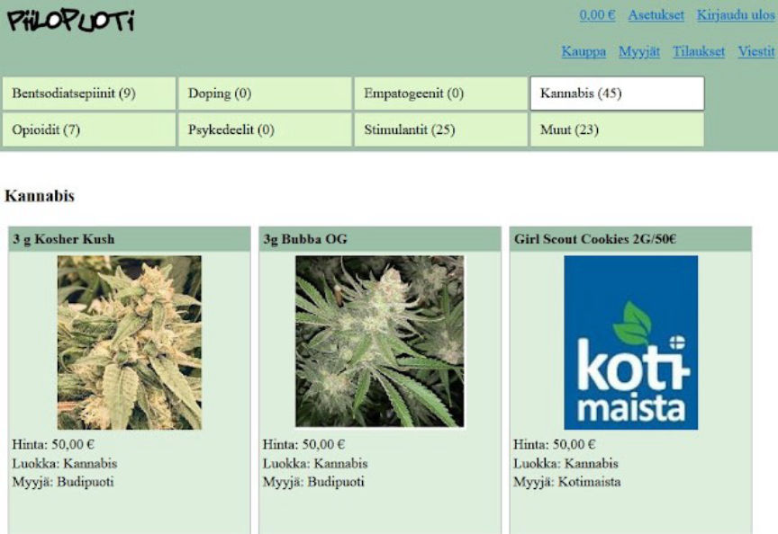
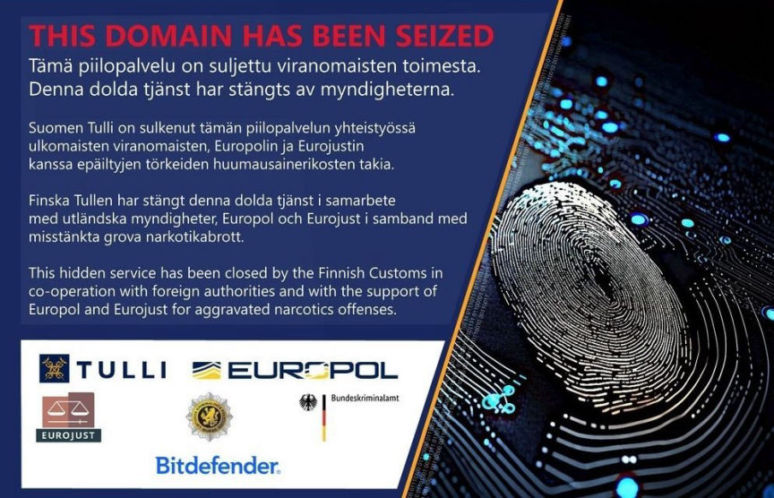

Finnish Market "Piilopuoti" Taken Down
~1 min read | Published on 2023-09-20, tagged Darkweb-Market, Seized using 231 words.
Authorities in Finland announced the seizure of the servers of "Piilopuoti," a Finnish-language dark web marketplace.

The seizure of the market, that has been in operation since May 2022, was announced by Finnish Customs. The market facilitated the distribution of illicit drugs throughout Finland.
The seizure resulted from investigations conducted by Finnish Customs with help from Europol and Eurojust, as well as authorities in Germany and Lithuania.
As disclosed in the seizure banner displayed on the market's homepage, the investigating authorities received help from Bitdefender.

Finnish Customs customs disclosed that they seized the contents of the market's server. They, however, did not reveal whether the seizure resulted in any arrests.
Investigations into the market's operations are still ongoing. Users of the market should assume they are under investigation and act accordingly.

Piilopuoti before its seizure
The seizure of the market, that has been in operation since May 2022, was announced by Finnish Customs. The market facilitated the distribution of illicit drugs throughout Finland.
The seizure resulted from investigations conducted by Finnish Customs with help from Europol and Eurojust, as well as authorities in Germany and Lithuania.
As disclosed in the seizure banner displayed on the market's homepage, the investigating authorities received help from Bitdefender.

The seizure banner
Quote:Bitdefender's senior director of investigation and forensics unit, Alexandru Catalin Cosoi
We are extremely pleased that Piilopuoti has been seized and would like to congratulate law enforcement, Finnish Customs, and everyone involved. This operation is a prime example of the public and private sector pooling resources and working together to disrupt illegal online activities. It should also serve as a wake-up call for criminals who falsely believe their infrastructures, anonymity, and actions are fully protected by the dark web. They should understand if they are in the crosshairs of an international effort, they will eventually be brought to justice.
Finnish Customs customs disclosed that they seized the contents of the market's server. They, however, did not reveal whether the seizure resulted in any arrests.
Investigations into the market's operations are still ongoing. Users of the market should assume they are under investigation and act accordingly.